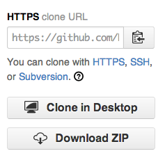

When working with other people's repositories, there are a few basic Git commands to remember:
git clonegit fetchgit mergegit pull
These commands are very useful when interacting with a remote repository. clone and fetch download remote code from a repository's remote URL to your local computer, merge is used to merge different people's work together with yours, and pull is a combination of fetch and merge.
We'll go in-depth on these commands below.
Clone
To grab a complete copy of another user's repository, use git clone like this:
git clone https://github.com/user/repo.git # Clones a repository to your computer
You can choose from several different URLs when cloning a repository. While logged in to GitHub, these URLs are available in the sidebar:

When you run git clone, the following actions occur:
- A new folder called
repois made - It is initialized as a Git repository
- A remote named
originis created, pointing to the URL you cloned from - All of the repository's files and commits are downloaded there
- The default branch (usually called
master) is checked out
For every branch foo in the remote repository, a corresponding remote-tracking branch refs/remotes/origin/foo is created in your local repository. You can usually abbreviate such remote-tracking branch names to origin/foo.
Fetch
Use git fetch to retrieve new work done by other people. Fetching from a repository grabs all the new remote-tracking branches and tags without merging those changes into your own branches.
If you already have a local repository with a remote URL set up for the desired project, you can grab all the new information by using git fetch <em>remotename</em> in the terminal:
git fetch remotename # Fetches updates made to a remote repository
Otherwise, you can always add a new remote and then fetch.
Merge
Merging combines your local changes with changes made by others.
Typically, you'd merge a remote-tracking branch (i.e., a branch fetched from a remote repository) with your local branch:
git merge remotename/branchname # Merges updates made online with your local work
Pull
git pull is a convenient shortcut for completing both git fetch and git mergein the same command:
git pull remotename branchname # Grabs online updates and merges them with your local work
Because pull performs a merge on the retrieved changes, you should ensure that your local work is committed before running the pull command. If you run into a merge conflict you cannot resolve, or if you decide to quit the merge, you can use git merge --abort to take the branch back to where it was in before you pulled.
Further reading
- "Working with Remotes" from the Pro Git book
- GitGuys: Adding and Removing Remote Branches